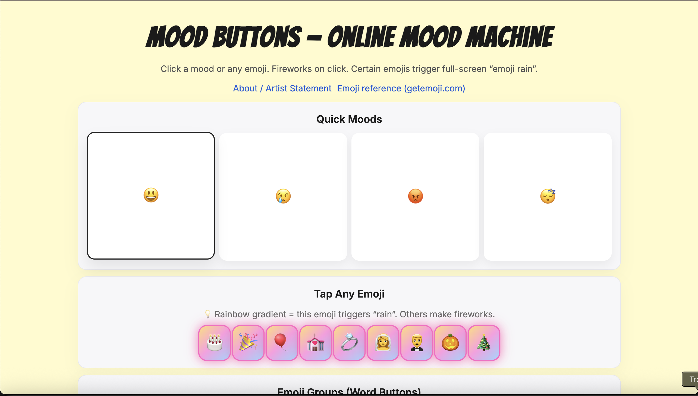
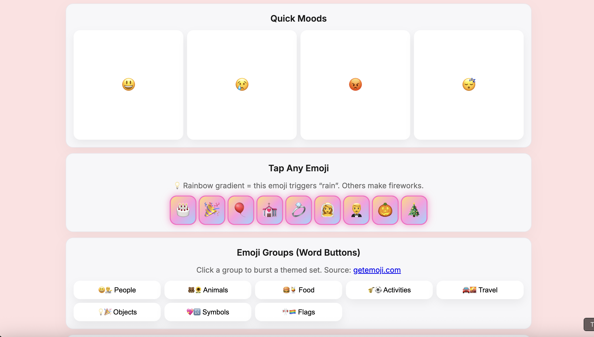

Mood Machine
Mood Buttons — Online Mood Machine →
Mood Machine is an interactive web project that explores how digital interfaces can express emotions. Users can click different buttons to trigger changes in color, text, and animation on the screen. Each button represents a different emotional state, creating a playful system where moods shift quickly through interaction. The project experiments with how simple visual changes can communicate feelings and invites viewers to reflect on how emotions move and change in digital spaces.
The project uses simple JavaScript events to change colors, text, and animation states in response to user interaction.
